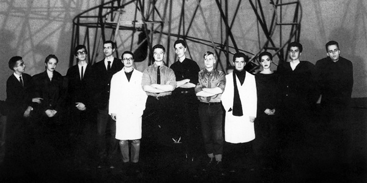

basekamp space > Events
East Art Map: IRWIN / NSK
Video screenings
IRWIN presentation
EAM project
EAM online
EAM Book
About IRWIN / NSK
About IRWIN / NSK:

Since 1983, the IRWIN artist group has been working with various media, from painting to public art, from sculptural works and installations to publishing. Following their "retro principle", the five-member-group utilizes and combines different motifs, symbols and signs from the fields of politics and art, which results in the transformation of their historical meaning and content, and in the re-contextualisation and deconstruction of their related ideologies.
Very often, basic information on what NSK is, when it was founded, what the NSK and Laibach philosophies are, and the like are required. To put it in a nutshell, NSK is in its structure a simple and yet complex mechanism which makes any precise explanation in a few words practically impossible. NSK began operating in 1984 as a large collective, a union of various groups brought together by their shared way of thinking and a similar way of expression through different media. The main NSK groups are: Laibach, Irwin, Noordung, New Collectivism Studio and the Department of Pure and Applied Philosophy, while there is a number of flexible subdivisions which emerge as the need arises and disolve under their own inertia. Each of the groups primarily works within its medium, nevertheless their bonds are firm and fruitful. Members of the groups meet on a regular basis, they talk, discuss and plan major common campaigns, test aesthetic and other preferences, exchange ideas and contexts, travel together, etc.